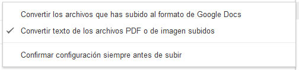
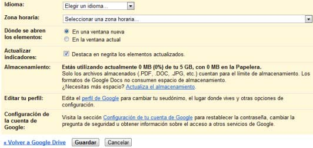

A continuación explicaremos las posibilidades de Configuración de Google Drive.
Para poder acceder a la configuración de Drive tendremos que hacer clic sobre el botón con el icono del engranaje.
Desde el menú que se despliega, podremos seleccionar la forma de visualización de la pantalla en el apartado "Vista en pantalla".
Desde el apartado "Configuración de subida" podemos definir nuestra preferencia sobre la conversión de los archivos subidos.
Pulsando la opción "Configuración" accederemos a una página donde podremos establecer otras preferencias.
Desde la opción "Configuración de Subida" encontramos una serie de opciones que permiten convertir los archivos que subimos.
Podemos establecer nuestra preferencia a la hora de convertir los archivos subidos a un formato de Google Docs. Seleccionando esta opción, los archivos de office (por ejemplo, .doc, .ppt, .xls) serán convertidos automáticamente.
La segunda opción nos permite extraer el texto de imágenes y documentos PDF y genera un documento de texto que podremos editar.
La última opción permite que las configuraciones anteriores nos sean consultadas para que podamos confirmarlo antes de comenzar la subida de un archivo.
En el apartado de "Configuración", entre otras cosas, podremos cambiar el idioma y zona horaria, configurar si los elementos se abren en una nueva ventana o en la ventana actual y conocer el espacio de almacenamiento que tenemos ocupado.
